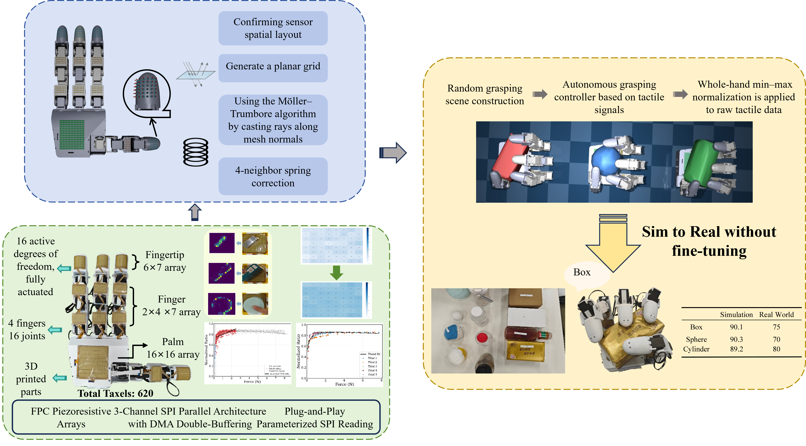

Yanyi Wang
Hi, I am Yanyi Wang, an undergraduate student in Electronic Science and Technology at Shenzhen Technology University, expected to graduate in 2027.
My research focuses on dexterous robotic manipulation, particularly the co-design of robot morphology and control, tactile sensing, and sim-to-real learning. I enjoy building complete robotic systems that connect mechanical design, perception, and intelligent control.
News
I achieved an overall band score of 7.0 on the IELTS examination.
Our AI-powered makeup robotic arm won the Grand MVP Award at the Hong Kong Physical AI Hackathon and was featured by South China Morning Post, China Daily, SpacemiT, and Brizan Ventures.
Our poster Preliminary Result on a Dexterous Hand with Full Hand Tactile Sensing and its Sim2Real Study received the Young Forum Top 10 Poster Award at the 5th China Conference on Force Tactile Technology and Applications; I was the sole undergraduate among the award recipients.
Research
Preliminary Result on a Dexterous Hand with Full Hand Tactile Sensing and its Sim2Real Study
The 5th China Conference on Force Tactile Technology and Applications, 2026
Top 10 Poster Award

A Two-Stage Optimization Framework for Designing Direct-Drive Dexterous Robotic Hands
20th IEEE International Conference on Control and Automation (ICCA), 2026

Competitions
I joined the Autobots team in my freshman year, where I gained foundational expertise in navigation and control. After competing in various team events as a core member in the 2024 season, I stepped up as the Team Captain for the 2025 season.
I am deeply grateful for the hard work and dedication of all my teammates—none of this would have been possible without them.
OnSite Autonomous Driving Algorithm Challenge
Regional 6th Place National 5th Place
This challenge evaluates the adaptability and stability of autonomous driving planning and control algorithms, requiring smooth sim-to-real transfer and real-car tests involving dynamic obstacle avoidance and traffic rule compliance.
National 5th Place (Season 2 Playoffs) · Regional 6th Place (Season 3 Playoffs)
The 20th National College Student Intelligent Vehicle Competition — Smart Life Challenge
National First Prize
Set in a “Smart Life” scenario, this event requires building a fully autonomous pipeline integrating ROS and Gazebo. Key tasks included intelligent voice interaction, computer vision-based recognition, cargo picking, and autonomous navigation with dynamic obstacle avoidance.
National First Prize · 10th Overall in Finals
The 19th National College Student Intelligent Vehicle Competition (Outdoor ROS Unmanned Vehicle Race)
National Third Prize
This competition tasks autonomous vehicles with a two-lap outdoor course. We utilized SLAM and sensor fusion to map the environment and identify obstacles in the first lap, followed by map-based autonomous navigation, traffic light detection, and precise parking in the second lap.
National Third Prize